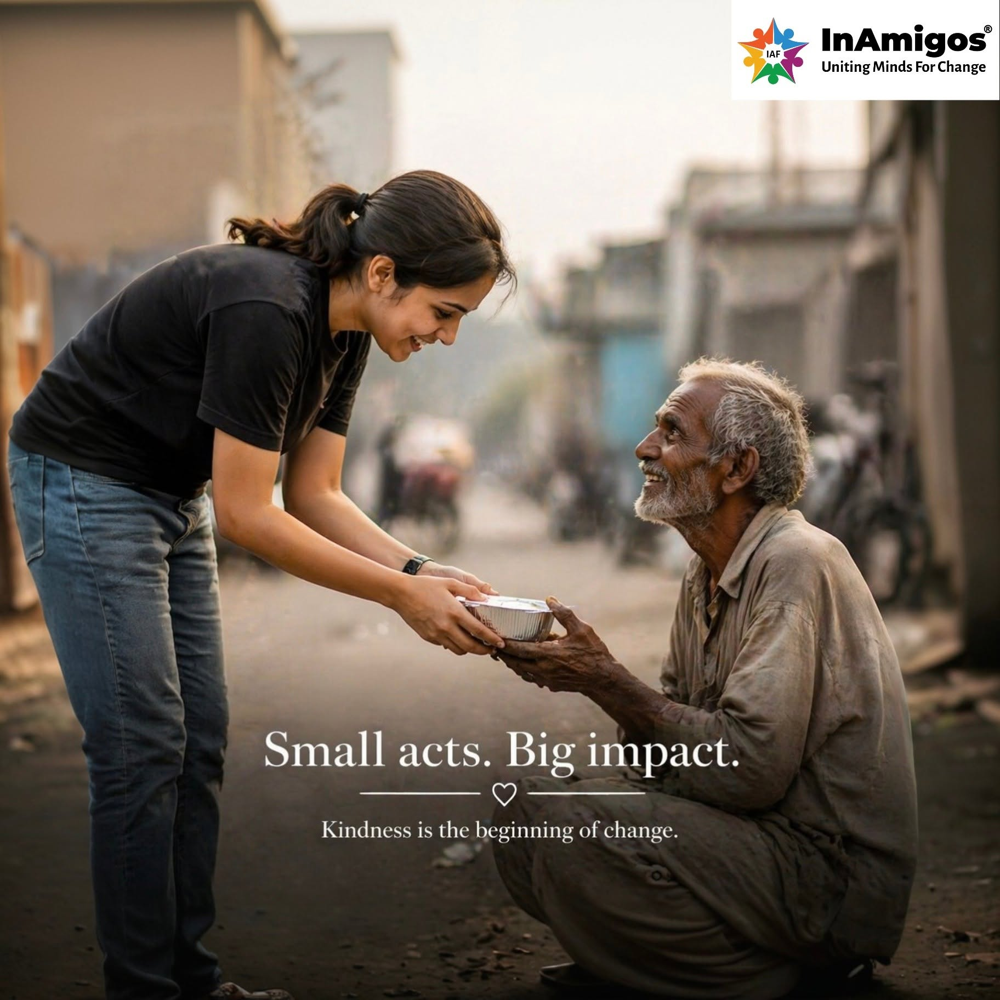
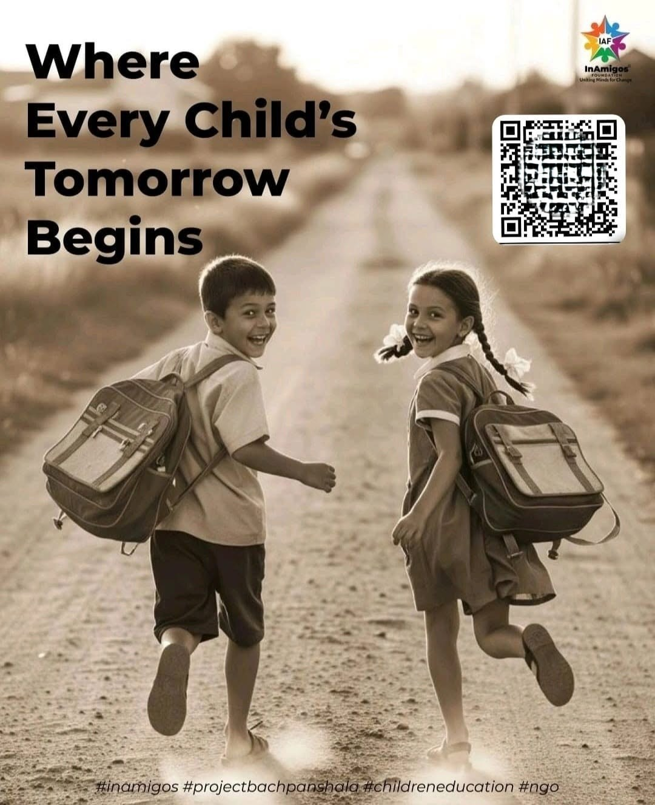
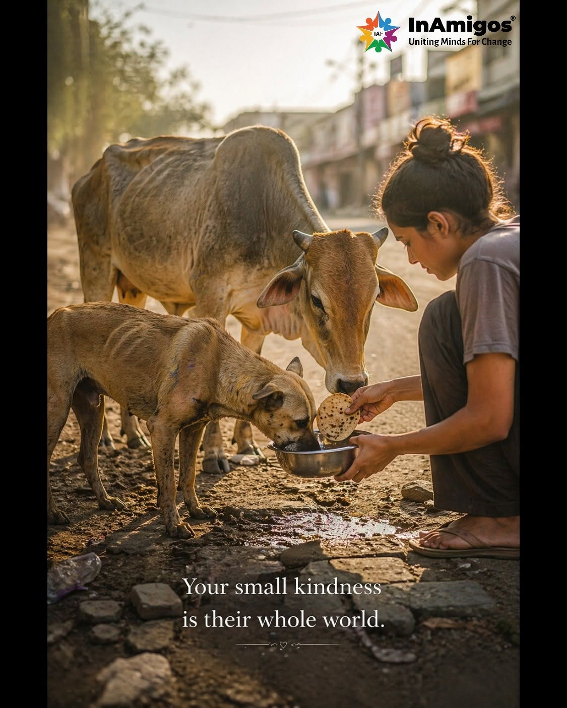
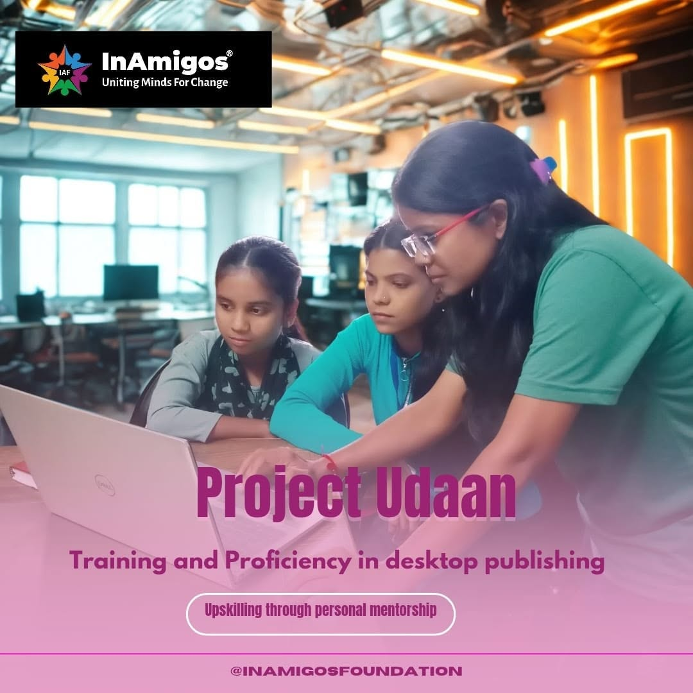
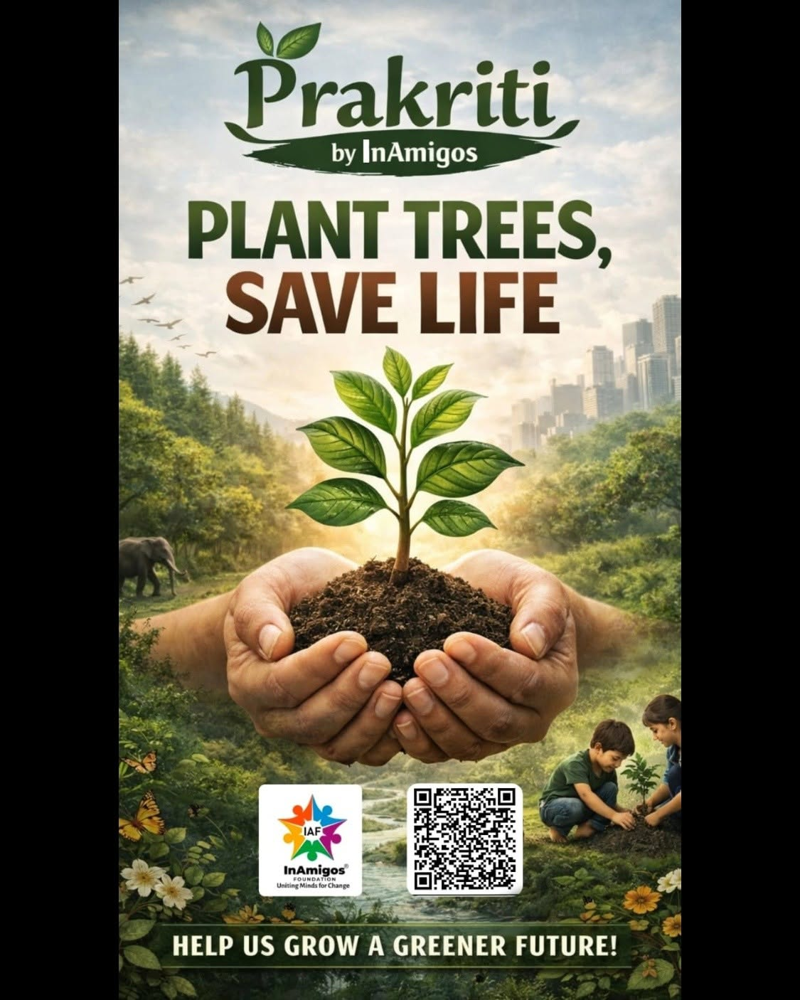

OUR PROJECTS
Six Initiatives, One Shared Mission
Each project addresses a different community need while contributing towards a more inclusive, compassionate and sustainable society.

Project Seva
Supports families facing hardship by providing food, clothing, and other basic necessities through community service activities.
Social Impact: Community Support
Project Bachpanshala
Encourages learning opportunities for children by promoting education, digital awareness, and essential life skills.
Social Impact: Education
Project Jeev
Promotes kindness towards animals through rescue efforts, feeding programs, and welfare activities.
Social Impact: Animal Welfare
Project Udaan
Supports women by encouraging skill development, confidence, awareness, and opportunities for growth.
Social Impact: Women Empowerment
Project Prakriti
Encourages environmental responsibility through tree plantation, sustainability initiatives, and awareness campaigns.
Social Impact: Environment
Project Vikas
Helps young people strengthen their skills and practical experience through learning opportunities and internships.
Social Impact: Youth Development